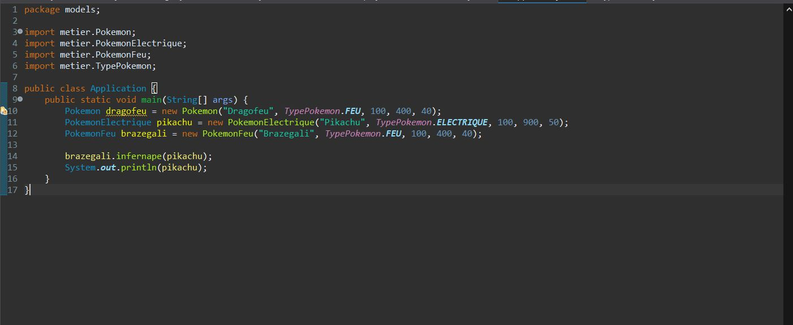
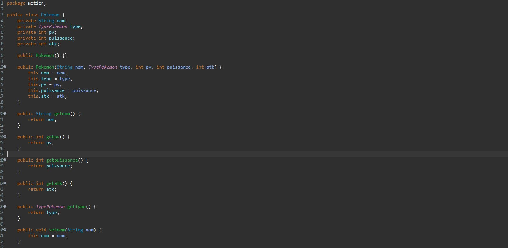

🎯 Contexte du projet
Ce projet est un jeu de combat Pokémon entièrement développé en Java et jouable en ligne de commande (CLI). Réalisé dans un contexte pédagogique, il permet d'appliquer concrètement les principes de la programmation orientée objet : modélisation des entités du jeu (Pokémon, types, combats), encapsulation des données, héritage et polymorphisme. Chaque Pokémon possède un nom, un type, des points de vie, une puissance et des points d'attaque. Les combats se déroulent au tour par tour dans le terminal, avec affichage des dégâts et de l'état de vie de chaque combattant.
🎓 Objectifs pédagogiques
- POO Java : Modéliser des entités réelles avec des classes, attributs privés et méthodes publiques
- Encapsulation : Protéger les données avec des getters/setters et des modificateurs d'accès
- Enum TypePokemon : Utiliser une énumération pour représenter les types (Feu, Eau, Plante…)
- Logique de combat : Implémenter un système de combat au tour par tour avec calcul des dégâts
- Packages Java : Organiser le code en packages métier pour une architecture claire
- Interface CLI : Afficher dynamiquement le déroulement du combat dans le terminal
✨ Fonctionnalités principales
1. Modélisation des Pokémon
Chaque Pokémon est représenté par une classe Java avec cinq attributs encapsulés : son nom, son type (enum TypePokemon), ses points de vie (PV), sa puissance et ses points d'attaque (ATK). Les données sont protégées par des getters et setters dédiés.
2. Système de combat au tour par tour
La méthode attaquer(Pokemon cible) permet à un Pokémon d'infliger des dégâts
à sa cible. Les points de vie de la cible sont réduits en fonction des points d'attaque
de l'attaquant, et l'état du combat s'affiche en temps réel dans le terminal.
3. Gestion de l'état de vie
La méthode estEnVie() vérifie à chaque tour si un Pokémon est encore en
capacité de combattre (PV > 0). Le terminal affiche les dégâts subis, les HP restants
ou annonce la défaite du Pokémon tombé au combat.
4. Types de Pokémon
Les types sont gérés via une énumération Java TypePokemon, permettant
de catégoriser chaque Pokémon (Feu, Eau, Plante, etc.) et d'ouvrir la voie
à des mécaniques de bonus/malus selon les affinités de types.
5. Affichage formaté dans le terminal
La méthode toString() surcharge l'affichage par défaut pour présenter
clairement les caractéristiques de chaque Pokémon : nom, type, PV, puissance
et ATK, structurés en lignes lisibles dans le terminal.
📸 Captures d'écran

Déroulement d'un combat

Classe Pokemon.java
🗄️ Architecture de l'application
Structure du projet :
- metier/Pokemon.java : Classe modèle avec attributs, getters/setters, attaquer() et estEnVie()
- metier/TypePokemon.java : Énumération des types de Pokémon (Feu, Eau, Plante…)
- metier/Combat.java : Logique de combat au tour par tour entre deux Pokémon
- Main.java : Point d'entrée, création des Pokémon et lancement du combat CLI
🛠️ Stack technique

Java
Langage principal utilisé pour la modélisation POO, la logique de combat et l'affichage CLI
CLI (Ligne de commande)
Interface de jeu entièrement dans le terminal avec affichage dynamique du combat
Packages Java
Organisation du code en package metier pour séparer la logique métier du point d'entrée
🚀 Défis relevés
- Modélisation rigoureuse d'une entité Pokémon avec encapsulation complète des données
- Implémentation d'une méthode
attaquer()gérant le calcul des dégâts et les affichages terminal - Utilisation d'une énumération Java pour représenter les types de Pokémon
- Surcharge de
toString()pour un affichage structuré des caractéristiques - Organisation du projet en packages respectant les bonnes pratiques Java
- Conception d'une boucle de combat lisible et interactive dans le terminal